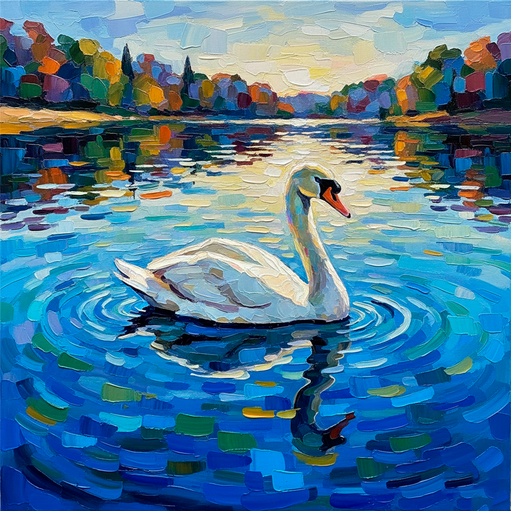
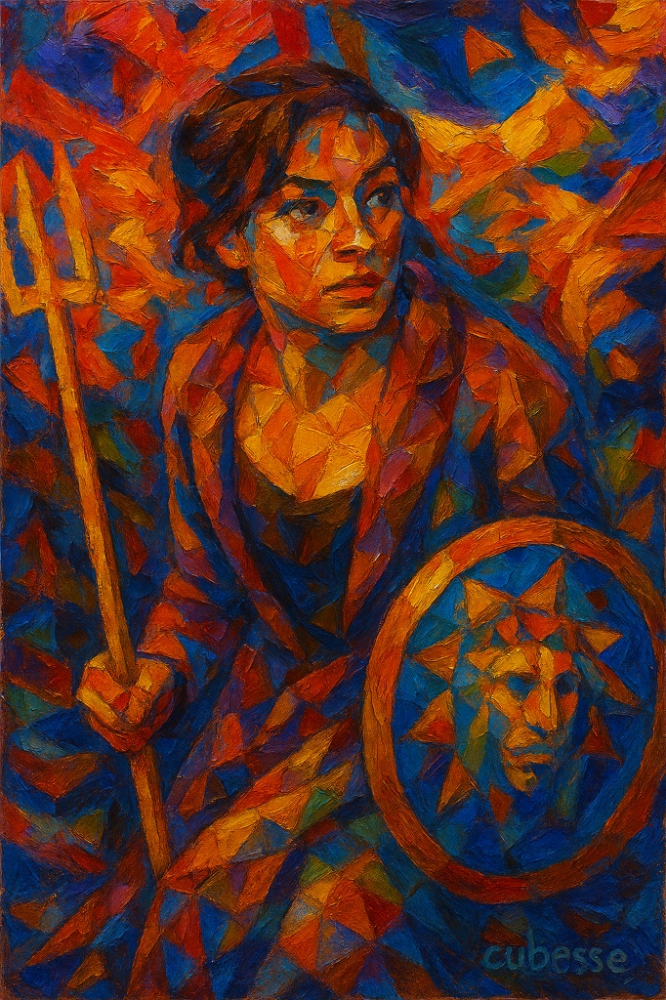

El Guardián Del Circuito Solar
Una pieza central del universo Edusse, representando la vigilancia eterna sobre la tecnología y la naturaleza. Destaca por sus tonos dorados y la fusión entre lo orgánico y lo mecánico.
Portfolio de Artista
Eduardo Ramírez de Cartagena
2026 Collection Selection
¿Cómo sueña la tecnología cuando es guiada por la mano humana?
Como artista visual, utilizo la Inteligencia Artificial no como un generador automático, sino como un pincel complejo y sofisticado. Cada pieza en el "Universo EDUSSE" comienza con una visión personal —un recuerdo, una emoción o un imposible arquitectónico— que moldeo meticulosamente a través de iteraciones digitales hasta alcanzar la imagen exacta que vive en mi mente.
Mi trabajo invita al espectador a ventanas de realidades alternativas: ciudades neofuturistas, naturalezas reinventadas y figuras atemporales. No busco replicar la realidad, sino expandirla.
EXP NEOCIRC
Estilo pictórico narrativo y envolvente basado en la energía circular, la pincelada expresiva y la
emoción visual.
Rasgos: Composición circular, pincelada suelta y color saturado. Puertos, barcos,
pueblos.
Función: Aporta la vertiente más luminosa, narrativa y emocional.
CUBESSE
El rostro cubista de EDUSSE. Construcción pictórica basada en geometría facetada y presencia
sólida.
Rasgos: Geometría angular, planos facetados, pincelada gruesa tipo óleo impasto.
Función: Identidad visual estructural; la figura como materia firme.
BORACARBON
Atmósfera monocroma, trazo contenido y carga emocional suspendida.
Rasgos: Paleta monocroma (grises, sepias), composición silenciosa, textura suave.
Función: Transmite introspección, pausa y memoria.
FRACNEO
Fragmentación pictórica y arquitectura emocional.
Rasgos: Composición densa de bloques superpuestos, color saturado en tensión.
Función: Las figuras vibran al ser fragmentadas; ritmo visual arquitectónico.
OLEOCUBBO
Estructura pictórica facetada, pincelada gruesa y volumen expresivo.
Rasgos: Geometría facetada, pincelada impasto, figura como bloque pictórico.
Función: Aplica geometría visual pura sobre figuras sólidas.
Una pieza central del universo Edusse, representando la vigilancia eterna sobre la tecnología y la naturaleza. Destaca por sus tonos dorados y la fusión entre lo orgánico y lo mecánico.

Una visión etérea de una arquitectura sacra suspendida en el cielo. La obra explora la ingravidez y la espiritualidad a través de estructuras clásicas reinventadas en un entorno onírico.

Una reinterpretación vibrante de la cultura pop y el paisaje urbano. Colores saturados y formas audaces capturan la energía frenética del sueño americano.

Dinamsimo puro. La fragmentación cubista se encuentra con la velocidad de la naturaleza. Una explosión de color que captura el instante preciso del vuelo.

Un homenaje a la luz del sur y la tradición. La técnica digital exalta los colores cálidos y la serenidad del mar, creando una atmósfera de calma y pertenencia.

El estilo Boracarbon se define por el contraste y la emoción. Esta pieza, desprovista de color, centra toda su atención en la atmósfera, la textura de la lluvia y la soledad de la figura.

Un retrato costumbrista llevado al terreno del arte digital de alto contraste. La dignidad del personaje y la composición clásica demuestran la capacidad de la técnica moderna para capturar el alma humana.

La naturaleza vista a través de la matemática. Patrones fractales y repeticiones geométricas construyen la forma orgánica del cisne, sugiriendo el orden oculto tras la belleza natural.

Fuerza, mirada y textura. El estilo Oleocubbo simula la densidad del óleo tradicional para dar peso y presencia física a este retrato de poder y resistencia.

La pieza que lo inició todo. Una síntesis de humor, surrealismo y técnica refinada. Un icono del "Universo Edusse" que desafía la lógica con una estética impecable.